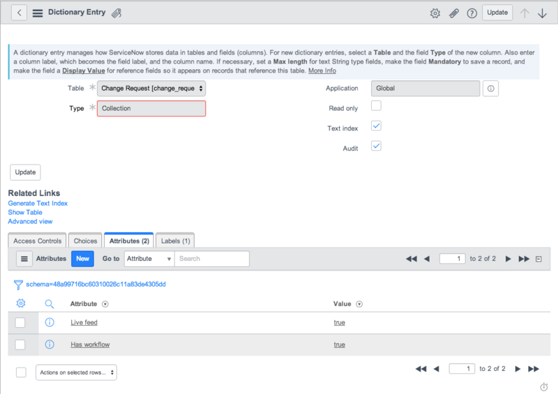
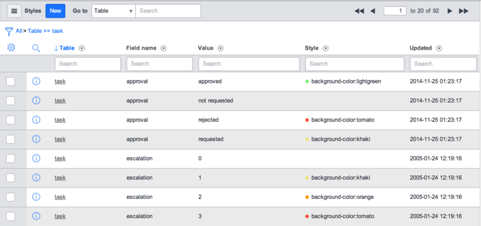
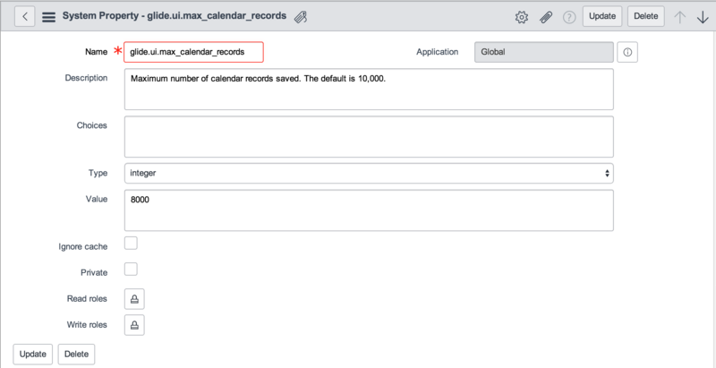

Customizing Calendar Reports
| |
Note: This article applies to Fuji. For more current information, see Customize Calendar Reports at http://docs.servicenow.com
The ServiceNow Wiki is no longer being updated. Please refer to http://docs.servicenow.com for the latest product documentation. |
Contents
1 Overview
You can specify the elements (fields) that get displayed for each task on a Calendar report. By default, the number and short_description fields are displayed, but this is configurable. You can configure radio buttons to appear on reports for various fields in the Task [task] table, so that calendar entries can be highlighted by properties such as priority level and approval status. You can select a different color to highlight each task property.
2 Configuring Calendar Attributes
To change the information displayed in a Calendar report, add attributes to the System Dictionary entry for the table you are using:
- Open a form for any record in that table.
- Right-click the form header and select Configure > Dictionary (Personalize > Dictionary in versions prior to Fuji).
- In the record list that appears, select the first record that does not have a value in the Column name field.
- Switch the Dictionary Entry form to the Advanced view (starting with Eureka).
- In the Attributes field, add calendar_elements=<field name>;<field name>, listing the fields you want to appear in each entry of your calendar report, separated by semi-colons.
- Note: When you define attributes for calendar elements, you replace the default display elements of number and short_description with the attributes that you list in this field. To add any additional attributes to the calendar entry and retain the number and short description of the change, you must include the number and short_description fields in your attributes.
- For example, to add risk level information to your change calendar, add the following attribute to the change_request table:
calendar_elements=number;short_description;risk
- 
- If the table already has an attribute, separate it from the new attribute you are adding with a comma, as in this example:
update_synch=true,calendar_elements=number;short_description;risk
- Click Update.
3 Highlighting Calendar Entries
By default, ServiceNow calendar reports provide three radio buttons above the calendar that enable you to highlight tasks by priority level, approval status, and escalation level. When you select Priority, for example, all tasks in the calendar at a priority level of 1 - Critical or 2 - High are highlighted in a different color.
The glide.ui.report.extend_calendar_choices property specifies how calendar highlighting options are determined. If the property is set to true, highlighting options are based on the current reporting table plus the base table. If the property is set to false, highlighting options are set by the styles in the Task table only.
To suit your own business needs, you can add or remove highlight controls and configure any combination of levels and states to be highlighted in a wide range of possible colors. The calendar selects the highlighting controls from the table in which they are defined (incident, change, problem, and so on). If no field styles are applied in a related table, then the calendar uses any highlighting definitions from the task (base) table. It is possible that some attributes of your change calendar, such as risk, cannot be configured for highlighting.
To define the highlighting controls for your task calendar reports:
- Navigate to System UI > Field Styles.
- To see the default highlighting controls, filter the view of the record list for the task table.
- Notice that there are several records for each field, representing different levels or states possible for that field, and that each state is represented by a different highlight color. You can delete records for those levels or states you are not interested in seeing, change the highlight colors, or add new controls.
- 
- To add a new control, click New in the record list.
- Select the Task [task] table from the list of tables.
- Select the Field you want to use as a control from the list of task fields.
- Type the field Value to use for your highlight trigger.
- If you are unsure of the value to use, navigate to System Definitions > Tables and Columns and look up the data type for your field in the task table. Field values may be a boolean, an integer, or a string in the table, regardless of how the value appears in the form.
- Define the Style (highlight color) for this level or state. Type background-color:<color name>, where <color name> is the configured name of a ServiceNow color as defined in Reports > Color Definition.
- The following record creates a radio button for the Knowledge check box that highlights all entries for which a knowledge base article has been created.

- Open a calendar report, such as Change Calendar from Reports > View/Run and select the Knowledge radio button.
- All calendar entries for changes that have knowledge base articles are highlighted in your selected color.

{kind=link}
{kind=link}
{kind=link}
{kind=link}
4 Reporting Limit
In the base ServiceNow system, calendar reports can save a maximum of 10,000 records. To override this default setting, add the glide.ui.max_calendar_records property.
- In the navigation filter, enter sys_properties.list.
- Click New in the list of properties.
- Complete the form as follows:
- Name: glide.ui.max_calendar_records
- Description: Type a phrase that describes the function of the property, such as Maximum number of calendar records saved. The default is 10,000.
- Type: Select integer from the list.
- Value: Type a new value for the number of records retained by the platform.
- The completed form looks like this:
- 
- Click Submit.
{kind=link}
If a calendar entry has a duration, it includes parenthetical information to indicate how many days since the event started and how many days until the event ends. For example, the parenthetical information included for the "CHG0000005 - Install new PBX ( -2 to +2)" entry indicates that the change started 2 days ago and has 2 days left until the end date. The start or end time might also show up here on the start day and end day of the change. To remove the information, add a property named glide.ui.calendar.include_duration_info and set its value to false.
5 Customizing Start and End Dates
Base calendar reports support multi-day events. For example, a change request with a Work Start date Monday and a Work End date Tuesday is displayed on both days when viewed in a Calendar field. However, when two custom fields named First Date and Last Date are used, the same behavior does not occur.
To achieve the multi-day span behavior in a calendar report with custom fields, name the fields in the following way:
- u_first_date → u_my_start_date
- u_last_date → u_my_end_date
The code looks for an ending field with exactly the same name as the start date field, except using the word end instead of start. If the custom fields are My Start Date and My End Date, the system correctly interprets the meaning of these fields because their names are exactly the same except for the word start and end.